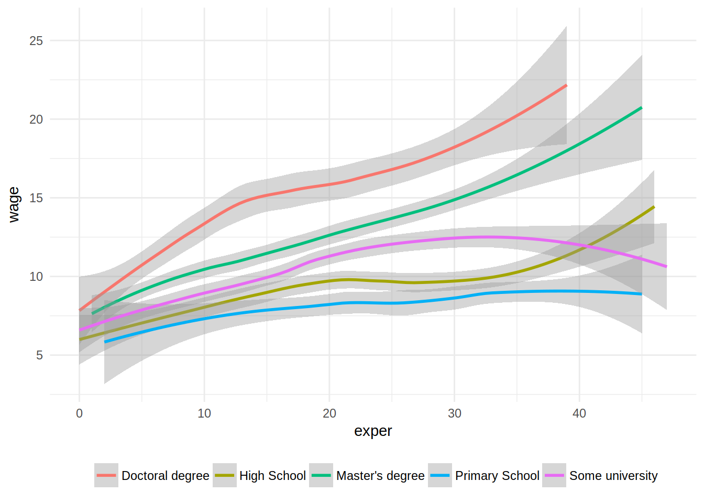

Teaching the tidyverse to beginners
End October I tweeted this:
will teach #rstats soon again but this time following @drob 's suggestion of the tidyverse first as laid out here: https://t.co/js8SsUs8Nv
— Bruno Rodrigues (@brodriguesco) October 24, 2017
and it generated some discussion. Some people believe that this is the right approach, and some others think that one should first present base R and then show how the tidyverse complements it. This year, I taught three classes; a 12-hour class to colleagues that work with me, a 15-hour class to master’s students and 3 hours again to some of my colleagues. Each time, I decided to focus on the tidyverse(almost) entirely, and must say that I am not disappointed with the results!
The 12 hour class was divided in two 6 hours days. It was a bit intense, especially the last 3 hours that took place Friday afternoon. The crowd was composed of some economists that had experience with STATA, some others that were mostly using Excel and finally some colleagues from the IT department that sometimes need to dig into some data themselves. Apart from 2 people, all the other never had any experience with R.
We went from 0 to being able to do the plot below after the end of the first day (so 6 hours in). Keep in mind that practically none of them even had opened RStudio before. I show the code so you can see the progress made in just a few hours:
library(Ecdat)
library(tidyverse)
library(ggthemes)data(Bwages)
bwages = Bwages %>%
mutate(educ_level = case_when(educ == 1 ~ "Primary School",
educ == 2 ~ "High School",
educ == 3 ~ "Some university",
educ == 4 ~ "Master's degree",
educ == 5 ~ "Doctoral degree"))
ggplot(bwages) +
geom_smooth(aes(exper, wage, colour = educ_level)) +
theme_minimal() +
theme(legend.position = "bottom", legend.title = element_blank())## `geom_smooth()` using method = 'loess'
Of course some of them needed some help here and there, and I also gave them hints (for example I told them about case_when() and try to use it inside mutate() instead of nested ifs) but it was mostly due to lack of experience and because they hadn’t had the time to fully digest R’s syntax which was for most people involved completely new.
On the second day I showed purrr::map() and purrr::reduce() and overall it went quite well too. I even showed list-columns, and this is where I started losing some of them; I did not insist too much on it though, only wanted to show them the flexibility of data.frame objects. Some of them were quite impressed by list-columns! Then I started showing (for and while) loops and writing functions. I even showed them tidyeval and again, it went relatively well. Once they had the opportunity to play a bit around with it, I think it clicked (plus they have lots of code examples to go back too).
At the end, people seemed to have enjoyed the course, but told me that Friday was heavy; indeed it was, but I feel that it was mostly because 12 hours spread on 2 days is not the best format for this type of material, but we all had time constraints.
The 15 hour Master’s course was spread over 4 days, and covered basically the same. I just used the last 3 hours to show the students some basic functions for model estimation (linear, count, logit/probit and survival models). Again, the students were quite impressed by how easily they could get descriptive statistics by first grouping by some variables. Through their questions, I even got to show them scoped versions of dplyr verbs, such as select_if() and summarise_at(). I was expecting to lose them there, but actually most of them got these scoped versions quite fast. These students already had some experience with R though, but none with the tidyverse.
Finally the 3 hour course was perhaps the most interesting; I only had 100% total beginners. Some just knew R by name and had never heard/seen/opened RStudio (with the exception of one person)! I did not show them any loops, function definitions and no plots. I only showed them how RStudio looked and worked, what were (and how to install) packages (as well as the CRAN Task Views) and then how to import data with rio and do descriptive statistics only with dplyr. They were really interested and quite impressed by rio (“what do you mean I can use the same code for importing any dataset, in any format?”) but also by the simplicity of dplyr.
In all the courses, I did show the $ primitive to refer to columns inside a data.frame. First I showed them lists which is where I introduced $. Then it was easy to explain to them why it was the same for a column inside a data.frame; a data.frame is simply a list! This is also the distinction I made from the previous years; I simply mentioned (and showed really quickly) matrices and focused almost entirely on lists. Most participants, if not all, had learned to program statistics by thinking about linear algebra and matrices. Nothing wrong with that, but I feel that R really shines when you focus on lists and on how to work with them.
Overall as the teacher, I think that focusing on the tidyverse might be a very good strategy. I might have to do some adjustments here and there for the future courses, but my hunch is that the difficulties that some participants had were not necessarily due to the tidyverse but simply to lack of time to digest what was shown, as well as a total lack of experience with R. I do not think that these participants would have better understood a more traditional, base, matrix-oriented course.